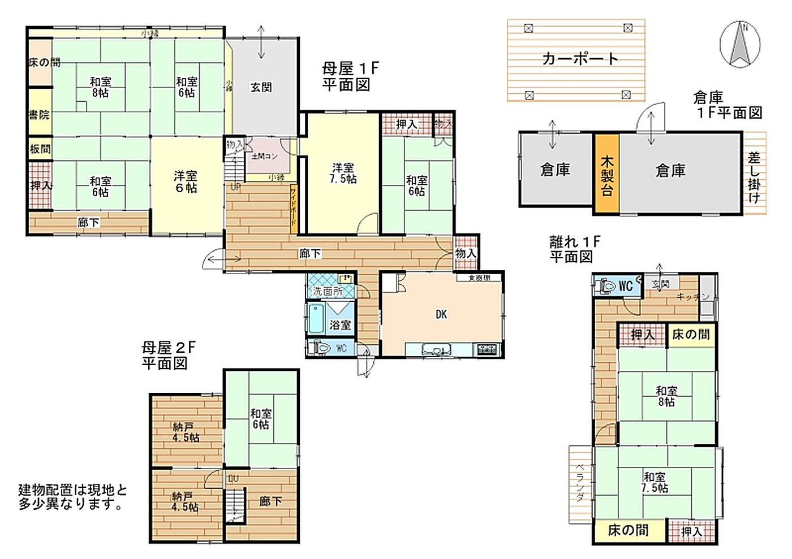

農村部エリア · 伊賀市平田（ひらた）
1,420㎡の敷地に母屋と離れがある家（平成2年）
1,680万円

建物の状態
洗面所の床の軋み、2階納戸の天井一部劣化、1階洋室の床一部劣化
伊賀流空き家バンクの調査より。
物件概要
- 所在地
- 伊賀市平田（ひらた）
- エリア
- 農村部エリア
- 間取り
- 7DK
- 構造
- 木造2階建て
- 建築年
- 平成2年
- 土地面積
- 1,420.44㎡
- 延床面積
- 223.77㎡
- 水道
- 上水道
- 排水
- 農業集落排水
- トイレ
- 水洗
- 風呂
- 灯油
- ガス
- プロパン
- 交通
- JR関西本線 新堂駅 7.3km／三重交通 宮の前（伊賀）バス停 0.2km
- 学校
- 小学校 0.7km／中学校 0.4km
- 買い物
- スーパー 0.6km／コンビニ 0.9km
- その他
- 駐車場3〜4台／道路幅5.5m／離れ（木造平屋）53.21㎡・倉庫21.41㎡／畑は契約前に農地法の許可が必要
360°バーチャル内覧
家の中を歩いてみるすべての部屋を360°で見られます。伊賀市のバーチャル内覧が新しいタブで開きます ↗動画
間取り図

場所
詳しい住所は利用者登録の後にお知らせします。地図は地区を示しています。